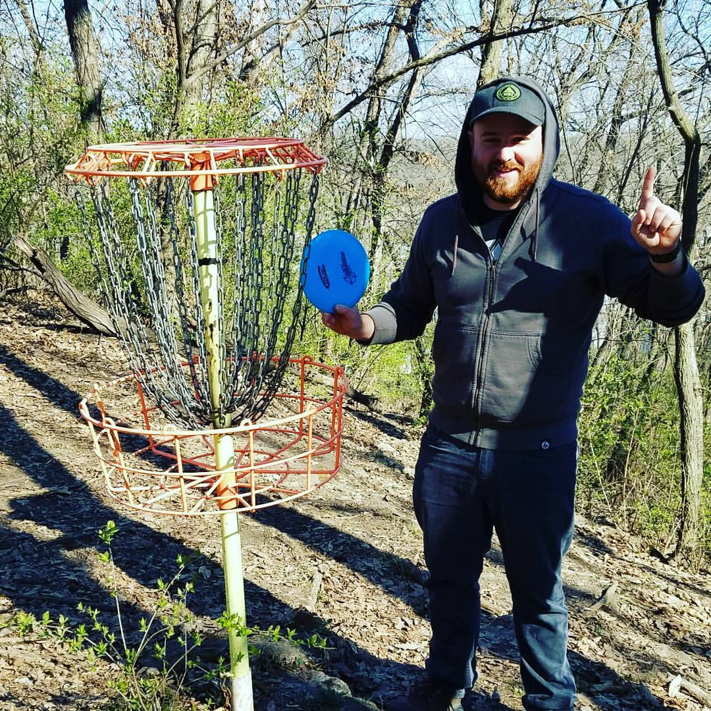

About Me
Hello! You've reached my website, so I'm going to share some information about myself with you. I'm a Kansas City native, who loves to disc golf, play board and tabletop games, travel, and consuming all the wonderful BBQ our city has to offer. I have a degree in Justice and Peace Studies from Creighton University, and am now attending the KU Coding Bootcamp! While in college, I studied abroad in the I have traveled to the Dominican Republic, Mexico, Boliva, and Peru!
Currently, I work at a small software company called Soleran as the Support Team Lead, and Project Manager for our Development Team. When I started managing our development team, I decided that it would be a good idea for me to learn to code, so I enrolled in the KU Codeing Bootcamp's Fall 2018 Cohort. I am excited to learn what being a full stack developer is all about, and take my coding skills to the next level!
Please take a look at the projects listed in my portfolio, and feel free to reach out to me via my contact page!